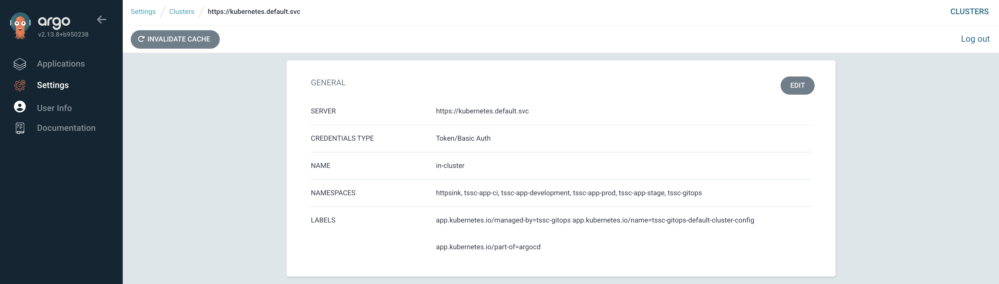

Configure the Argo CD Integration
The Argo CD plugin enables Red Hat Developer Hub to display deployment status and continuous delivery information directly within the Software Catalog. This integration provides real-time visibility into application deployments managed by Argo CD.
-
Display deployment status information in the Software Catalog
-
Show application health and sync status from Argo CD
-
Provide direct links to Argo CD application views
-
Enable developers to monitor their application deployments without leaving the developer portal
Configuring the integration requires:
-
Creating a dedicated readonly user account in Argo CD for secure API access
-
Storing Argo CD credentials in a Secret and loading it into the Red Hat Developer Hub pod
-
Adding the Argo CD dynamic plugin to your Red Hat Developer Hub plugin configuration
-
Configuring entity annotations to link entities with Argo CD Applications
Create the Argo CD Service Account and Credentials
To facilitate secure communication between Red Hat Developer Hub and Argo CD, you should create a dedicated readonly user account. It’s possible to use the existing admin user account, however using the principle of least privilege is the best practice.
Your cluster has been pre-configured with an Argo CD instance that’s managed by Red Hat OpenShift GitOps. You’ll update this instance to support the integration between it and Red Hat Developer Hub.
Create a Readonly Argo CD User
-
Log in to the {openshift_console_url}[OpenShift Web Console^] using the following credentials:
-
Username:
{openshift_admin_user} -
Password:
{openshift_admin_password}
-
-
Navigate to Operators > Installed Operators and search for "gitops" to find the Red Hat OpenShift GitOps operator.
-
Select the operator then the Argo CD tab.

-
Select the tssc-gitops instance, and then Actions > Edit Argo CD.
-
Add this line to the
extraConfigsection to add a developer-hub user:accounts.developer-hub: 'apiKey, login' -
Edit the
rbac.policysection to grant readonly permissions to the new user by adding a new line fordeveloper-hubbelow the existing policies.policy: | g, system:cluster-admins, role:admin g, cluster-admins, role:admin g, developer-hub, role:readonly -
The resulting configuration will resemble the following screenshot.

-
Scroll down and click Save.
The operator will update the necessary Argo CD ConfigMaps to enable the new developer-hub user account.
Set the Readonly Argo CD User’s Password
-
Navigate to Workloads > Secrets in the tssc-gitops project.
-
Select the
argocd-secretSecret, and use the Actions dropdown to select Edit Secret. -
Scroll down and click Add key/value.
-
Supply the following Key:
accounts.developer-hub.password -
Supply the following Value:
$2y$10$KnsgxceFRwN15iVJ3BxskuIJ2/qUqzaLs8.Oea1WzyvBraZxdG.eu
-
Click Save.
The new password is d3v3l0p3rs, but Argo CD expects a hash and salt generated using bcrypt. The hash and salt provided above were generated using htpasswd like so: htpasswd -bnBC 10 "" 'd3v3l0p3rs'.
Verify the Argo CD User Account is Active
-
Visit Networking > Routes in the tssc-gitops namespace.
-
Click the link in the Location column to access Argo CD.
-
Do not click the Log in via OpenShift button.
-
Login using the username
developer-huband passwordd3v3l0p3rs- an empty application list will be displayed.

|
If you can’t login, review the Argo CD ConfigMap and Secret changes you made for accuracy. |
Update the Red Hat Developer Hub Configuration
Now that Argo CD is configured with a readonly user, you’ll update the Red Hat Developer Hub configuration to enable the Argo CD integration. The procedure is similar to the previous plugins you added, so you’re probably becoming familiar with it by now.
Create a Secret for Argo CD Credentials
Create a Secret in your Red Hat Developer Hub namespace to store the developer-hub Argo CD credentials:
-
Navigate to Workloads > Secrets.
-
Ensure that the
setup-rhdhproject is selected. -
Click Create > From YAML
-
Replace the content in the YAML editor with the following:
apiVersion: v1 kind: Secret metadata: name: argocd-secrets namespace: setup-rhdh type: Opaque stringData: # Warning: Remove trailing slashes or the plugin will throw "method not allowed" errors ARGOCD_URL: https://tssc-gitops-server-tssc-gitops.{openshift_cluster_ingress_domain} ARGOCD_USERNAME: developer-hub ARGOCD_PASSWORD: d3v3l0p3rs -
Click Create.
Add Argo CD Secrets to the Backstage CR
Update your Backstage CR to include the Argo CD secret:
-
Navigate to your Backstage CR in the OpenShift Web Console and switch to the YAML view.
-
Update the
extraEnvs.secretssection to reference the argocd-secrets Secret you created:extraEnvs: secrets: - name: keycloak-secrets - name: gitlab-secrets # Inject the ARGOCD_URL, ARGOCD_USERNAME, # and ARGOCD_PASSWORD into the pod as environment variables - name: argocd-secrets -
Click Save.
Enable the Argo CD Dynamic Plugin
Enable the Argo CD plugin by updating your dynamic-plugins-rhdh ConfigMap:
-
Navigate to Workloads > ConfigMaps and click on
dynamic-plugins-rhdh. -
Click Edit ConfigMap.
-
Update the
dynamic-plugins.yamlcontent to include the Argo CD plugins:- package: ./dynamic-plugins/dist/roadiehq-backstage-plugin-argo-cd-backend-dynamic disabled: false - package: ./dynamic-plugins/dist/backstage-community-plugin-redhat-argocd disabled: falseVerify that your indentation is correct by aligning it with the existing plugins.
-
Click Save.
Configure the Argo CD Plugin
Update your app-config.yaml to include Argo CD integration configuration:
-
Navigate to Workloads > ConfigMaps and click on
rhdh-config. -
Click Edit ConfigMap.
-
Add the following
argocdconfiguration at the root level of the app-config.yaml:argocd: appLocatorMethods: - type: config instances: - name: argocd url: ${ARGOCD_URL} username: ${ARGOCD_USERNAME} password: ${ARGOCD_PASSWORD}The
argocdkey should be at the same indentation level as thecatalogandintegrationskeys in the app-config.yaml. -
Click Save to update the app-config.yaml.
Wait for the new Backstage pod to start, and check the backstage-backend logs for the Argo CD plugin initializing messages.

Verify Argo CD Integration
Configure and Verify Entity Annotations and Application Labels
For entities to display Argo CD information, they must include the appropriate annotation linking them to their corresponding Argo CD applications.
Recall that your environment has been pre-configured with a repository that contains a sample catalog-info.yaml in GitLab - module-2-assets/discovery-example.
|
Normally the catalog-info.yaml file will live alongside source code, or in a dedicated repository for catalog files. This module places it in the same repository as the deployment manifests for convenience. |
In this case you can see that the argocd/app-selector annotation is set on the Component. This tells the Argo CD plugin for Red Hat Developer Hub to query the configured Argo CD instance for Applications with a label matching that selector.
Create a Namespace
In this section you’ll create an Argo CD Application. This Application will manage resources in a specific namespace. You’ll pre-create this namespace with a specific label that ensures the tssc-gitops Argo CD instance can manage resources inside that namespace. The OpenShift GitOps operator detects this label and updates the Argo CD permissions accordingly.
-
Visit the OpenShift Web Console and ensure you’re logged in as the admin user.
-
Click the plus icon in the top-right corner and select Import YAML.
-
Paste the following to create the namespace:
kind: Namespace apiVersion: v1 metadata: name: httpsink labels: # Provide the tssc-gitops instance with permission to # manage kubernetes resources in this namespace argocd.argoproj.io/managed-by: tssc-gitops -
Click Create.
-
Confirm the namespace is managed by viewing the clusters screen in Argo CD, then selecting the in-cluster item. If needed, login as:
-
Username:
developer-hub -
Password:
d3v3l0p3rs
-
-
Your new httpsink namespace should be listed in the Namespaces field.

Create an Argo CD Application
Earlier, you logged into Argo CD and confirmed that no Applications existed; it’s time to create one.
-
Visit the OpenShift Web Console and ensure you’re logged in as the admin user.
-
Click the plus icon in the top-right corner and select Import YAML to create the Application using this YAML, and click Create.
apiVersion: argoproj.io/v1alpha1 kind: Application metadata: name: httpsink namespace: tssc-gitops labels: app.kubernetes.io/name: httpsink backstage.io/app: httpsink spec: project: default source: repoURL: https://gitlab-gitlab.{openshift_cluster_ingress_domain}/rhdh/module-2-assets.git targetRevision: HEAD path: argocd-example/k8s destination: name: in-cluster namespace: httpsink syncPolicy: automated: prune: true selfHeal: true syncOptions: - CreateNamespace=true retry: limit: 5 backoff: duration: 5s factor: 2 maxDuration: 3m
The Application you created is a simple example, but notably it has a app.kubernetes.io/name: httpsink label. Recall that the Argo CD plugin for Red Hat Developer Hub uses a selector to query information from Argo CD for a given Backstage Entity - this is the label your Component uses as the selector when querying Argo CD for deployment information.
View the Application in Argo CD and Developer Hub
First, perform a sanity check by viewing your new application in the Argo CD dashboard.
-
Visit the tssc-gitops Argo CD dashboard.
-
If needed, login as:
-
Username:
developer-hub -
Password:
d3v3l0p3rs
-
-
Confirm that the application named httpsink is listed and marked as Healthy and Synced (it may take a minute or two for the initial sync to complete).

-
Next, return to Red Hat Developer Hub.
-
Login as:
-
Username:
{rhdh_user} -
Password:
{rhdh_user_password}
-
-
Visit the Catalog by clicking the link on the left menu, ensure Kind is set to Component and search for
httpsink.
-
Select the HTTP Sink Application from the list, then view the CD tab for the Component.
It may take a minute or two for the CD tab to appear. Wait a few moments, and reload the page. If the CD tab doesn’t appear after two minutes, verify the dynamic plugins configuration you updated in the prior section.

-
Click on the listed application to view more information on the managed Kubernetes resources.

Conclusion
Nice work! Developers can now view the continuous delivery status of their applications directly in Red Hat Developer Hub. In this instance, just one environment’s information is shown, but the application could be deployed in multiple environments. A card for each environment would be listed in the Argo CD tab.